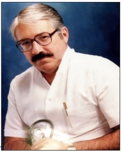

Residência Médica em Cirurgia Cardiovascular do Hospital de Messejana Dr. Carlos Alberto Studart Gomes
A Residência Médica no Hospital de Messejana Dr. Carlos Alberto Studart Gomes.
A RM no Hospital de Messeiana (HM) teve seu início no ano de 1973. Até então, só o Hospital das Clinicas da UFC e o Hospital Geral de Fortaleza (HGF) mantinham programas regulares de RM. Àquela época, Dr. Carlos Alberto Studart Gomes, seu diretor, dotara o HM com os pré-requisitos necessários para uma cardiologia moderna, tanto com a aquisição dos equipamentos necessários, como requisitando o que havia de melhor em material humano.

Dr. Regis Jucá comandava a cirurgia na companhia dos Drs. João Petrola de Melo Jorge e Maurício Mota, com formação especializada em cirurgia cardiovascular.
Em 1973, Dr. Carlos Alberto iniciou o programa de RM do HM em duas especialidades: cardiologia e cirurgia cardíaca. O primeiro residente de cardiologia foi o Dr. Abdias Rolim Gomes e o primeiro de cirurgia cárdica, Dr. Francisco Martins de Oliveira. Em 1974, com a abnegação do Dr. Carlos Alberto, inaugurava-se a unidade G destinada exclusivamente à cardiologia. Com a inauguração da unidade G e o conceito do HM já firmado além muros, passou-se a receber pacientes com cardiopatia cirúrgica do Acre até a Bahia, o que evidenciava a excelência e credibilidade do trabalho ali realizado.